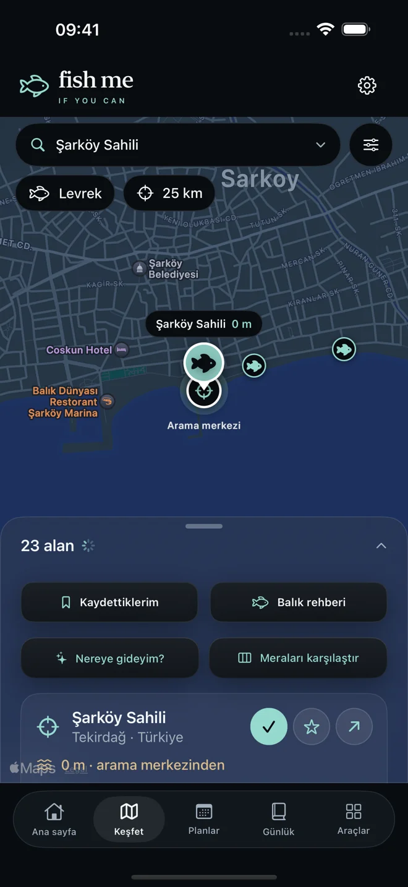
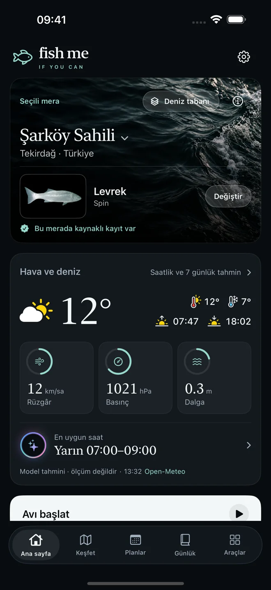
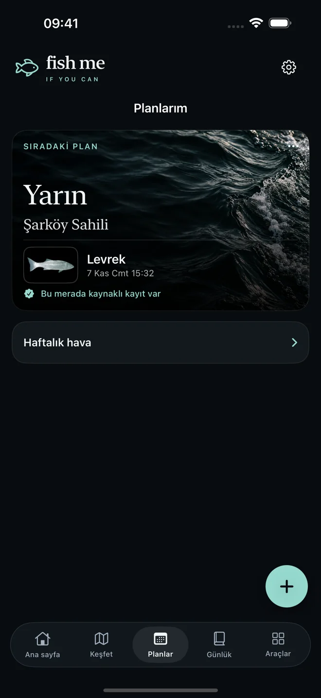
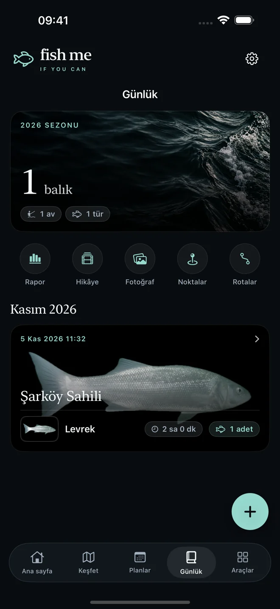
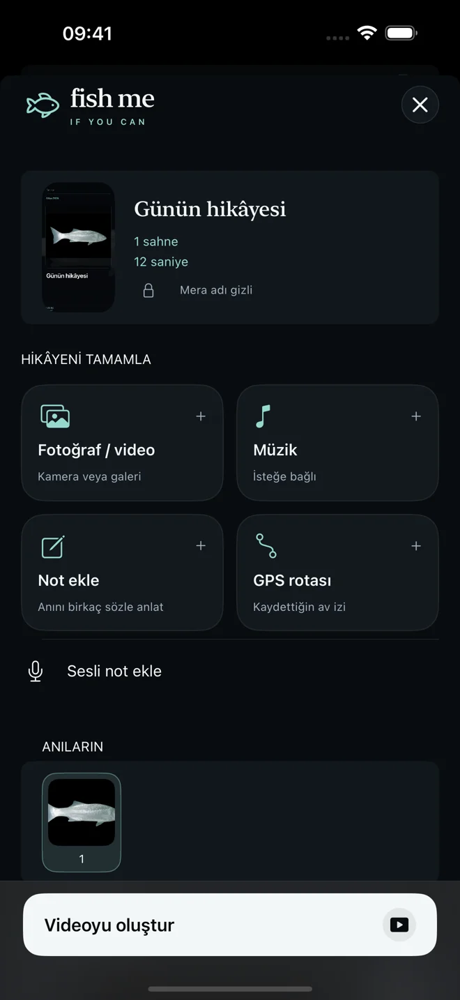

01 / Keşfet
Geri dönmek isteyeceğin bir mera.
Türkiye ve Avrupa’da hedef balık, konum ve mesafeye göre mera keşfet. Kaynak ve doğrulama durumunu gör; tekrar gitmek istediğin meraları kaydet.

HER AVIN BİR HİKÂYESİ VAR
Bir sonraki merandan paylaşacağın hikâyeye. Koşullara göre planla, balıklarını kaydet, günün izini sakla. Hepsi tek bir yerde.
Uygulamayı keşfetYakında iPhone’da

FISH ME IF YOU CAN / iOSBİR SONRAKİ AVIN
Meranı seç. Koşullara bak. Avını başlat. Balıkların, notların ve anıların aynı yerde kalsın.
Türkiye ve Avrupa’da hedef balık, konum ve mesafeye göre mera keşfet. Kaynak ve doğrulama durumunu gör; tekrar gitmek istediğin meraları kaydet.

Rüzgâr, basınç ve saatlik hava koşullarını av planınla birlikte incele. Meranı seçerken mevcut deniz tabanı kaynaklarına da bak.

Balık kayıtlarını ait oldukları ava ekle. Fotoğraf ve notlarını sakla; istersen GPS rotası kaydet, nokta işaretle ve koordinat paylaş.

GÜNÜN HİKÂYESİ
Fotoğraflarını, müziğini, sesli ve yazılı notlarını, istersen GPS rotanı bir araya getir. Gününü sevdiklerinle paylaşabileceğin bir videoya dönüştür.

Kaynaklı meralar, açık kapsam. Tür varlığı ve avlanma izni ayrı gösterilir; doğrulanmamış alanlar belirtilir. Deniz tabanı kapsamı konuma göre değişir. Uygulama sonuç uydurmak yerine mevcut kaynakları gösterir.
FISH ME PRO
Ücretsiz indir. Uygun yeni aboneler Pro’yu 3 gün ücretsiz deneyebilir. Sonrasında Almanya mağazasında aylık 5,99 € veya yıllık 39,99 €. Fiyat ülkeye göre değişir; Apple, onayından önce yerel fiyatı ve deneme uygunluğunu gösterir.
Abonelik otomatik yenilenir. Apple hesabı ayarlarından iptal edilebilir. Erişim sona erdiğinde mevcut kayıtların görüntülenebilir kalır.
Abonelik koşulları ↗